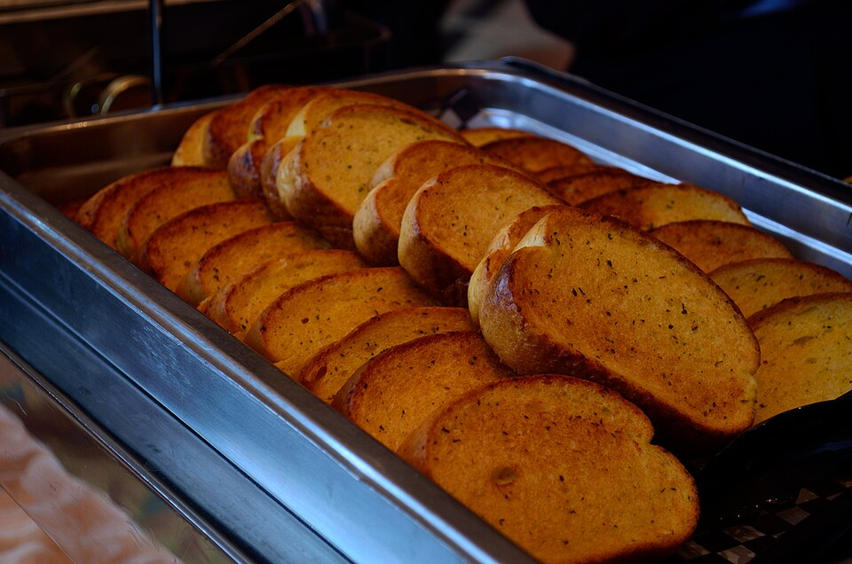

Home
Garlic Bread

Description
Garlic bread is a classic, savory side dish made from toasted bread, generously topped with a mixture of butter,
garlic,
and herbs. The result is a deliciously crispy and aromatic treat that pairs wonderfully with pastas, salads, and
soups.
It's a simple yet irresistible dish that can be made in under 30 minutes, making it perfect for both casual and
special
meals.
Ingredients
- 1/2 cup (1 stick) unsalted butter, softened
- 3-4 garlic cloves, minced (or 1-2 tsp garlic powder)
- 1 tbsp fresh parsley, chopped (or 1 tsp dried parsley)
- 1/2 tsp salt (or to taste)
- 1/4 tsp black pepper
- Optional: 1/4 tsp red pepper flakes for extra heat
- 1 loaf of Italian or French bread (sliced in half horizontally)
- 1/4 cup grated Parmesan cheese (optional)
Steps
- In a bowl, mix the softened butter, minced garlic, parsley, salt, and pepper until well combined.
- Preheat your oven to 375°F (190°C).
- Slice the loaf of bread horizontally (or leave it whole for a pull-apart style). Spread a generous layer of
garlic butter on the cut sides.
- Place the bread halves on a baking sheet, cut side up, and bake for 10–12 minutes, until golden and crispy
on
the edges.
- If using, sprinkle grated Parmesan cheese on top of the bread during the last 2 minutes of baking.
- Remove from the oven, slice, and serve warm.